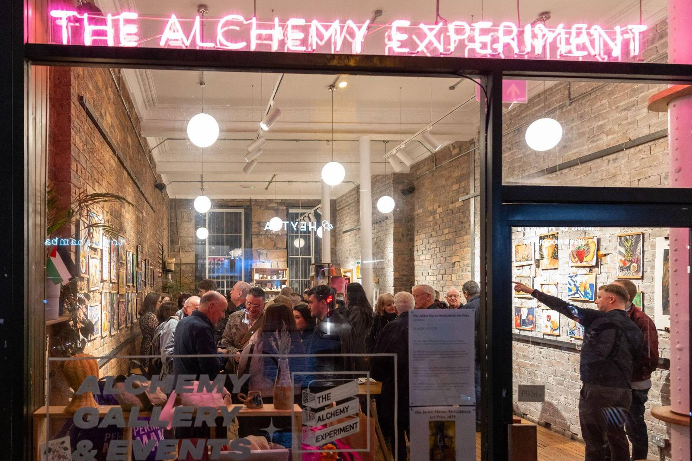
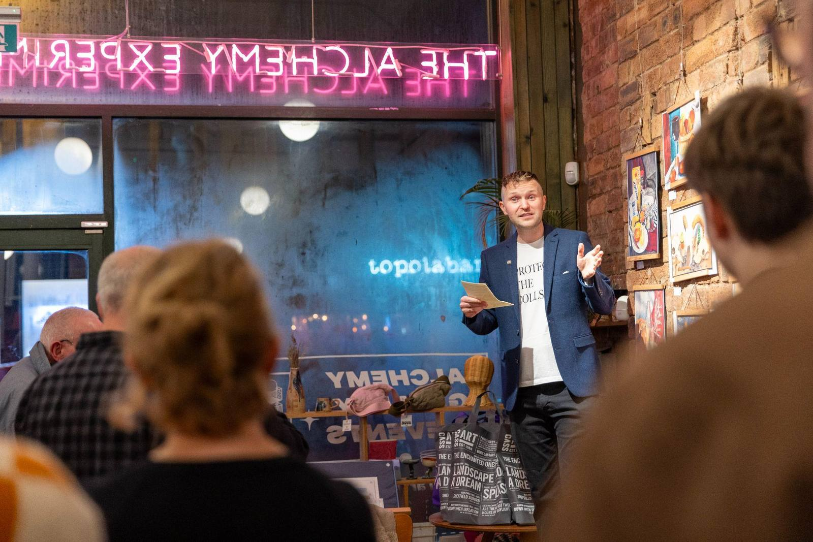
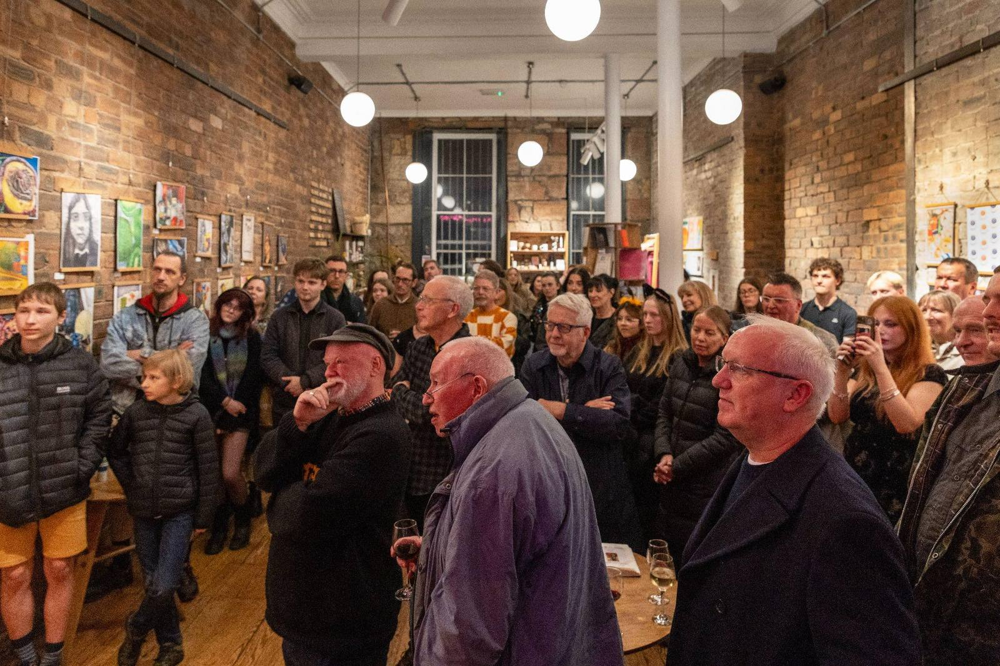

2025 - second year
Entries were up 96% on the first year. With the support of partners and sponsors, eleven prizes were awarded across the four categories - roughly one in every eleven entries. The exhibition ran for two weeks and drew pupils, families, teachers and West End visitors through the doors. Work came from Clydebank High School, St Peter the Apostle High School, Dumbarton Academy and Vale of Leven Academy.
2,512,023 estimated reach of the 2025 campaign across local press and social media


